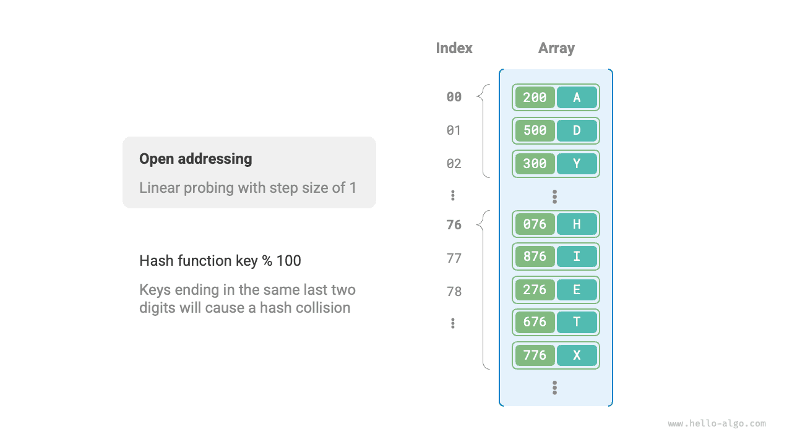
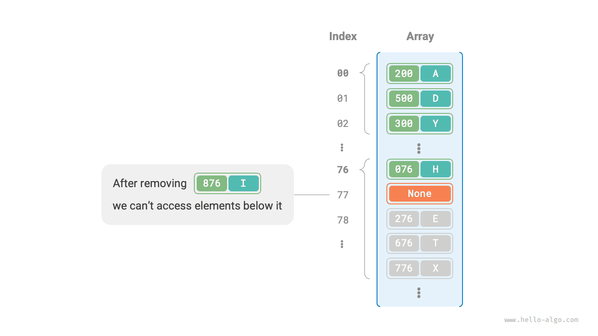

التجزئة
تصادم التجزئة
ذكر القسم السابق أنه، في معظم الحالات، تكون مساحة إدخال دالة التجزئة أكبر بكثير من مساحة إخراجها، لذا فإن تصادمات التجزئة حتمية نظرياً. فمثلاً، إذا كانت مساحة الإدخال جميع الأعداد الصحيحة وكانت مساحة الإخراج بحجم سعة المصفوفة، فستُعيَّن حتماً عدة أعداد صحيحة إلى فهرس الدلو نفسه.
وقد تؤدي تصادمات التجزئة إلى نتائج استعلام غير صحيحة، مما يؤثر تأثيراً شديداً في قابلية استخدام جدول التجزئة. ولمعالجة هذه المشكلة، يمكننا عند حدوث تصادم تجزئة إجراء توسيع لجدول التجزئة حتى يزول التصادم. وهذا النهج بسيط ومباشر وفعّال، لكنه غير فعّال إلى حد كبير لأن توسيع جدول التجزئة يتضمن قدراً كبيراً من نقل البيانات وإعادة حساب قيم التجزئة. ولتحسين الكفاءة، يمكننا اتباع الاستراتيجيات التالية:
- تحسين بنية بيانات جدول التجزئة بحيث يعمل جدول التجزئة بشكل طبيعي عند حدوث تصادمات تجزئة.
- التوسيع عند الضرورة فقط، أي فقط عندما تكون تصادمات التجزئة شديدة.
والطريقتان الرئيسيتان لتحسين بنية جدول التجزئة هما السلسلة المنفصلة والعنونة المفتوحة.
السلسلة المنفصلة
في جدول التجزئة الأصلي، يمكن لكل دلو تخزين زوج مفتاح-قيمة واحد فقط. وتستبدل السلسلة المنفصلة العنصر الواحد في كل دلو بقائمة مترابطة، بمعالجة كل زوج مفتاح-قيمة كعقدة وتخزين جميع أزواج المفتاح-القيمة المتصادمة في القائمة نفسها. ويوضح الشكل أدناه مثالاً على جدول تجزئة بالسلسلة المنفصلة.

وفي جدول التجزئة المنفّذ بالسلسلة المنفصلة، تعمل العمليات الأساسية كما يلي:
- الاستعلام عن العناصر: أدخِل
key، واحسب فهرس الدلو باستخدام دالة التجزئة، وادخل إلى رأس القائمة المترابطة المقابلة، واجتز القائمة مقارناً المفاتيح حتى يُعثر على زوج المفتاح-القيمة الهدف. - إضافة العناصر: استخدم دالة التجزئة أولاً لتحديد موقع القائمة المترابطة المقابلة، ثم أدرِج العقدة (زوج المفتاح-القيمة) في القائمة.
- حذف العناصر: استخدم دالة التجزئة لتحديد موقع القائمة المترابطة المقابلة، ثم اجتزها لإيجاد العقدة الهدف وحذفها.
وللسلسلة المنفصلة القيود التالية:
- زيادة استخدام المساحة: تحتوي القائمة المترابطة على مؤشرات عقد، تستهلك مساحة ذاكرة أكبر من المصفوفات.
- انخفاض كفاءة الاستعلام: لأن العثور على العنصر المقابل يتطلب اجتيازاً خطياً للقائمة المترابطة.
وتوفّر الشيفرة أدناه تنفيذاً بسيطاً لجدول تجزئة بالسلسلة المنفصلة، مع ملاحظتين:
- تُستخدم القوائم (المصفوفات الديناميكية) بدلاً من القوائم المترابطة لتبسيط الشيفرة. وفي هذا الإعداد، يحتوي جدول التجزئة (المصفوفة) على عدة دلاء، كل منها قائمة.
- يتضمن هذا التنفيذ دالة لتوسيع جدول التجزئة. فعندما يتجاوز معامل الحمولة $\frac{2}{3}$، نوسّع جدول التجزئة إلى $2$ ضعف حجمه الأصلي.
TypeScript
/* جدول تجزئة بالسلسلة المنفصلة */
class HashMapChaining {
#size: number; // عدد أزواج المفتاح-القيمة
#capacity: number; // سعة جدول التجزئة
#loadThres: number; // عتبة معامل الحمولة لتفعيل التوسيع
#extendRatio: number; // مضاعف التوسيع
#buckets: Pair[][]; // مصفوفة الدلاء
/* البانية */
constructor() {
this.#size = 0;
this.#capacity = 4;
this.#loadThres = 2.0 / 3.0;
this.#extendRatio = 2;
this.#buckets = new Array(this.#capacity).fill(null).map((x) => []);
}
/* دالة التجزئة */
#hashFunc(key: number): number {
return key % this.#capacity;
}
/* معامل الحمولة */
#loadFactor(): number {
return this.#size / this.#capacity;
}
/* عملية الاستعلام */
get(key: number): string | null {
const index = this.#hashFunc(key);
const bucket = this.#buckets[index];
// اجتز الدلو، وإذا وُجد key فأعِد val المقابل
for (const pair of bucket) {
if (pair.key === key) {
return pair.val;
}
}
// إذا لم يُعثر على key، أعِد null
return null;
}
/* عملية الإضافة */
put(key: number, val: string): void {
// عندما يتجاوز معامل الحمولة العتبة، نفّذ التوسيع
if (this.#loadFactor() > this.#loadThres) {
this.#extend();
}
const index = this.#hashFunc(key);
const bucket = this.#buckets[index];
// اجتز الدلو، وإذا صادفت key المحدد، فحدّث val المقابل وأعِد
for (const pair of bucket) {
if (pair.key === key) {
pair.val = val;
return;
}
}
// إذا لم يكن key موجوداً، ألحق زوج المفتاح-القيمة بالنهاية
const pair = new Pair(key, val);
bucket.push(pair);
this.#size++;
}
/* عملية الحذف */
remove(key: number): void {
const index = this.#hashFunc(key);
let bucket = this.#buckets[index];
// اجتز الدلو واحذف زوج المفتاح-القيمة منه
for (let i = 0; i < bucket.length; i++) {
if (bucket[i].key === key) {
bucket.splice(i, 1);
this.#size--;
break;
}
}
}
/* توسيع جدول التجزئة */
#extend(): void {
// خزّن جدول التجزئة الأصلي مؤقتاً
const bucketsTmp = this.#buckets;
// هيّئ جدول التجزئة الجديد الموسّع
this.#capacity *= this.#extendRatio;
this.#buckets = new Array(this.#capacity).fill(null).map((x) => []);
this.#size = 0;
// انقل أزواج المفتاح-القيمة من جدول التجزئة الأصلي إلى الجديد
for (const bucket of bucketsTmp) {
for (const pair of bucket) {
this.put(pair.key, pair.val);
}
}
}
/* طباعة جدول التجزئة */
print(): void {
for (const bucket of this.#buckets) {
let res = [];
for (const pair of bucket) {
res.push(pair.key + ' -> ' + pair.val);
}
console.log(res);
}
}
}
وتجدر الإشارة إلى أنه عندما تصبح القائمة المترابطة طويلة جداً، يكون زمن الاستعلام $O(n)$ ضعيفاً. وفي هذه الحالة يمكن تحويل القائمة المترابطة إلى شجرة AVL أو شجرة حمراء-سوداء، مما يقلل التعقيد الزمني لعمليات البحث إلى $O(\log n)$.
العنونة المفتوحة
لا تُدخل العنونة المفتوحة بنى بيانات إضافية. بل تعالج تصادمات التجزئة عبر الفحص المتكرر. وتشمل استراتيجيات الفحص الشائعة الفحص الخطي والفحص التربيعي والتجزئة المتعددة.
ولنأخذ الفحص الخطي مثالاً لتوضيح آلية جداول التجزئة بالعنونة المفتوحة.
الفحص الخطي
يستخدم الفحص الخطي خطوة ثابتة للفحص بالتتابع، لذا تختلف عملياته بعض الشيء عن عمليات جدول التجزئة العادي.
- إدراج العناصر: احسب فهرس الدلو باستخدام دالة التجزئة. وإذا كان الدلو مشغولاً، فواصل الفحص إلى الأمام من موضع التصادم بخطوة ثابتة (عادةً $1$) حتى تجد دلواً فارغاً، ثم أدرِج العنصر فيه.
- البحث عن العناصر: إذا حدث تصادم، فواصل الفحص إلى الأمام بالخطوة نفسها حتى تجد العنصر المقابل وأعِد
valueالخاص به؛ وإذا صادفت دلواً فارغاً، فالعنصر الهدف ليس في جدول التجزئة، لذا أعِدNone.
ويوضح الشكل أدناه توزيع أزواج المفتاح-القيمة في جدول تجزئة بالعنونة المفتوحة يستخدم الفحص الخطي. وفي ظل دالة التجزئة هذه، تُعيَّن المفاتيح ذات الرقمين الأخيرين المتشابهين إلى الدلو نفسه. ثم يضعها الفحص الخطي في ذلك الدلو والدلاء التالية له.

غير أن الفحص الخطي عرضة للتكتّل. وبشكل أدق، كلما طالت منطقة مشغولة متصلة في المصفوفة، زاد احتمال حدوث تصادمات جديدة داخل تلك المنطقة. ويؤدي ذلك بدوره إلى نمو التكتل أكثر فأكثر، ما يخلق حلقة مفرغة تُدهور تدريجياً كفاءة عمليات الإدراج والحذف والبحث والتحديث.
ومن المهم ملاحظة أنه لا يمكننا حذف العناصر مباشرةً من جدول تجزئة بالعنونة المفتوحة. فحذف عنصر ينشئ دلواً فارغاً None في المصفوفة. وأثناء البحث، بمجرد وصول الفحص الخطي إلى ذلك الدلو الفارغ فإنه يتوقف، ما يعني أن أي عناصر مخزّنة أبعد على مسار الفحص تصبح غير قابلة للوصول. ونتيجة لذلك، قد يستنتج البرنامج خطأً أن تلك العناصر غير موجودة، كما هو موضح في الشكل أدناه.

ولحل هذه المشكلة، يمكننا اعتماد الحذف الكسول: فبدلاً من إزالة عنصر من جدول التجزئة مباشرةً، نستخدم ثابتاً TOMBSTONE لوسم الدلو. وفي ظل هذه الآلية، يشير كل من None وTOMBSTONE إلى دلاء يمكنها استقبال أزواج المفتاح-القيمة. والفرق أن الفحص الخطي، عند مصادفته TOMBSTONE، يجب أن يواصل الفحص، لأن أزواج المفتاح-القيمة قد توجد أبعد على المسار.
غير أن الحذف الكسول قد يسرّع تدهور أداء جدول التجزئة. فكل عملية حذف تترك علامة خلفها، ومع نمو عدد مدخلات TOMBSTONE، يزداد زمن البحث أيضاً، لأن الفحص الخطي قد يحتاج إلى تجاوز عدة علامات حذف قبل إيجاد العنصر الهدف.
ولمعالجة ذلك، يمكننا تسجيل فهرس أول TOMBSTONE نصادفه أثناء الفحص الخطي وتبديل العنصر الهدف الذي عُثر عليه إلى ذلك الموضع. وتكمن الفائدة في أن كل استعلام أو إدراج يمكنه نقل العناصر أقرب إلى مواضعها المثالية، أي أقرب إلى نقطة بداية الفحص، مما يحسّن كفاءة البحث.
وتنفّذ الشيفرة أدناه جدول تجزئة بالعنونة المفتوحة (فحص خطي) مع الحذف الكسول. وللانتفاع بشكل أفضل بمساحة جدول التجزئة، نتعامل مع جدول التجزئة باعتباره «مصفوفة دائرية». وعند تجاوز نهاية المصفوفة، نعود إلى البداية ونواصل الاجتياز.
TypeScript
/* جدول تجزئة بالعنونة المفتوحة */
class HashMapOpenAddressing {
private size: number; // عدد أزواج المفتاح-القيمة
private capacity: number; // سعة جدول التجزئة
private loadThres: number; // عتبة معامل الحمولة لتفعيل التوسيع
private extendRatio: number; // مضاعف التوسيع
private buckets: Array<Pair | null>; // مصفوفة الدلاء
private TOMBSTONE: Pair; // علامة الحذف
/* البانية */
constructor() {
this.size = 0; // عدد أزواج المفتاح-القيمة
this.capacity = 4; // سعة جدول التجزئة
this.loadThres = 2.0 / 3.0; // عتبة معامل الحمولة لتفعيل التوسيع
this.extendRatio = 2; // مضاعف التوسيع
this.buckets = Array(this.capacity).fill(null); // مصفوفة الدلاء
this.TOMBSTONE = new Pair(-1, '-1'); // علامة الحذف
}
/* دالة التجزئة */
private hashFunc(key: number): number {
return key % this.capacity;
}
/* معامل الحمولة */
private loadFactor(): number {
return this.size / this.capacity;
}
/* ابحث عن فهرس الدلو المقابل لـ key */
private findBucket(key: number): number {
let index = this.hashFunc(key);
let firstTombstone = -1;
// فحص خطي، توقف عند مصادفة دلو فارغ
while (this.buckets[index] !== null) {
// إذا صادفت key، فأعِد فهرس الدلو المقابل
if (this.buckets[index]!.key === key) {
// إذا صادفت علامة حذف سابقاً، فانقل زوج المفتاح-القيمة إلى ذلك الفهرس
if (firstTombstone !== -1) {
this.buckets[firstTombstone] = this.buckets[index];
this.buckets[index] = this.TOMBSTONE;
return firstTombstone; // أعِد فهرس الدلو المنقول
}
return index; // أعِد فهرس الدلو
}
// سجّل أول علامة حذف تُصادفها
if (
firstTombstone === -1 &&
this.buckets[index] === this.TOMBSTONE
) {
firstTombstone = index;
}
// احسب فهرس الدلو، وعُد إلى الرأس إذا تجاوزت الذيل
index = (index + 1) % this.capacity;
}
// إذا لم يكن key موجوداً، فأعِد فهرس الإدراج
return firstTombstone === -1 ? index : firstTombstone;
}
/* عملية الاستعلام */
get(key: number): string | null {
// ابحث عن فهرس الدلو المقابل لـ key
const index = this.findBucket(key);
// إذا وُجد زوج المفتاح-القيمة، فأعِد val المقابل
if (
this.buckets[index] !== null &&
this.buckets[index] !== this.TOMBSTONE
) {
return this.buckets[index]!.val;
}
// إذا لم يكن زوج المفتاح-القيمة موجوداً، فأعِد null
return null;
}
/* عملية الإضافة */
put(key: number, val: string): void {
// عندما يتجاوز معامل الحمولة العتبة، نفّذ التوسيع
if (this.loadFactor() > this.loadThres) {
this.extend();
}
// ابحث عن فهرس الدلو المقابل لـ key
const index = this.findBucket(key);
// إذا وُجد زوج المفتاح-القيمة، فاكتب فوق val وأعِد
if (
this.buckets[index] !== null &&
this.buckets[index] !== this.TOMBSTONE
) {
this.buckets[index]!.val = val;
return;
}
// إذا لم يكن زوج المفتاح-القيمة موجوداً، فأضف زوج المفتاح-القيمة
this.buckets[index] = new Pair(key, val);
this.size++;
}
/* عملية الحذف */
remove(key: number): void {
// ابحث عن فهرس الدلو المقابل لـ key
const index = this.findBucket(key);
// إذا وُجد زوج المفتاح-القيمة، فاكتب فوقه علامة الحذف
if (
this.buckets[index] !== null &&
this.buckets[index] !== this.TOMBSTONE
) {
this.buckets[index] = this.TOMBSTONE;
this.size--;
}
}
/* توسيع جدول التجزئة */
private extend(): void {
// خزّن جدول التجزئة الأصلي مؤقتاً
const bucketsTmp = this.buckets;
// هيّئ جدول التجزئة الجديد الموسّع
this.capacity *= this.extendRatio;
this.buckets = Array(this.capacity).fill(null);
this.size = 0;
// انقل أزواج المفتاح-القيمة من جدول التجزئة الأصلي إلى الجديد
for (const pair of bucketsTmp) {
if (pair !== null && pair !== this.TOMBSTONE) {
this.put(pair.key, pair.val);
}
}
}
/* طباعة جدول التجزئة */
print(): void {
for (const pair of this.buckets) {
if (pair === null) {
console.log('null');
} else if (pair === this.TOMBSTONE) {
console.log('TOMBSTONE');
} else {
console.log(pair.key + ' -> ' + pair.val);
}
}
}
}
الفحص التربيعي
الفحص التربيعي مشابه للفحص الخطي، وهو إحدى الاستراتيجيات الشائعة للعنونة المفتوحة. فعند حدوث تصادم، لا يتخطى الفحص التربيعي ببساطة عدداً ثابتاً من الخطوات، بل يتخطى عدداً من الخطوات يساوي «مربع عدد عمليات الفحص»، أي $1, 4, 9, \dots$ خطوة.
وللفحص التربيعي المزايا التالية:
- يحاول الفحص التربيعي تخفيف أثر التكتّل في الفحص الخطي عبر تخطي مسافات تساوي مربع عدد عمليات الفحص.
- يتخطى الفحص التربيعي مسافات أكبر للعثور على مواضع فارغة، مما يساعد على توزيع البيانات بشكل أكثر توازناً.
غير أن الفحص التربيعي ليس مثالياً:
- لا يزال التكتّل موجوداً، أي إن بعض المواضع أكثر عرضة للشغل من غيرها.
- نظراً لنمو المربعات، قد لا يفحص الفحص التربيعي جدول التجزئة بأكمله، أي إنه قد لا يتمكن من الوصول إلى دلاء فارغة في جدول التجزئة حتى لو وُجدت.
التجزئة المتعددة
كما يوحي الاسم، تستخدم التجزئة المتعددة دوال تجزئة متعددة $f_1(x)$، $f_2(x)$، $f_3(x)$، $\dots$ للفحص.
- إدراج العناصر: إذا صادفت دالة التجزئة $f_1(x)$ تعارضاً، فجرّب $f_2(x)$، وهكذا، حتى يُعثر على موضع فارغ ويُدرَج العنصر.
- البحث عن العناصر: ابحث بالترتيب نفسه لدوال التجزئة حتى يُعثر على العنصر الهدف وتُعيده؛ وإذا صادفت موضعاً فارغاً أو استُنفدت جميع دوال التجزئة، فهذا يشير إلى أن العنصر ليس في جدول التجزئة، فأعِد
None.
وبالمقارنة مع الفحص الخطي، تقلّ احتمالية التكتّل في التجزئة المتعددة، لكن استخدام دوال تجزئة متعددة يضيف تكاليف حسابية إضافية.
يرجى ملاحظة أن جداول التجزئة القائمة على العنونة المفتوحة، بما في ذلك الفحص الخطي والفحص التربيعي والتجزئة المتعددة، تواجه جميعاً مشكلة عدم إمكانية حذف العناصر مباشرةً.
اختيار لغات البرمجة
تعتمد لغات البرمجة المختلفة استراتيجيات مختلفة لتنفيذ جداول التجزئة. وفيما يلي بعض الأمثلة:
- تستخدم Python العنونة المفتوحة. ويستخدم قاموس
dictأعداداً شبه عشوائية للفحص. - تستخدم Java السلسلة المنفصلة. ومنذ JDK 1.8، عندما يبلغ طول المصفوفة في
HashMapالقيمة 64 ويبلغ طول قائمة مترابطة القيمة 8، تُحوَّل القائمة المترابطة إلى شجرة حمراء-سوداء لتحسين أداء البحث. - تستخدم Go السلسلة المنفصلة. وتنصّ Go على أن كل دلو يمكنه تخزين 8 أزواج مفتاح-قيمة على الأكثر، وإذا تجاوزت السعة ذلك، يُربط دلو فائض؛ وعندما تكثر الدلاء الفائضة، تُجرى عملية توسيع خاصة متساوية السعة لضمان الأداء.